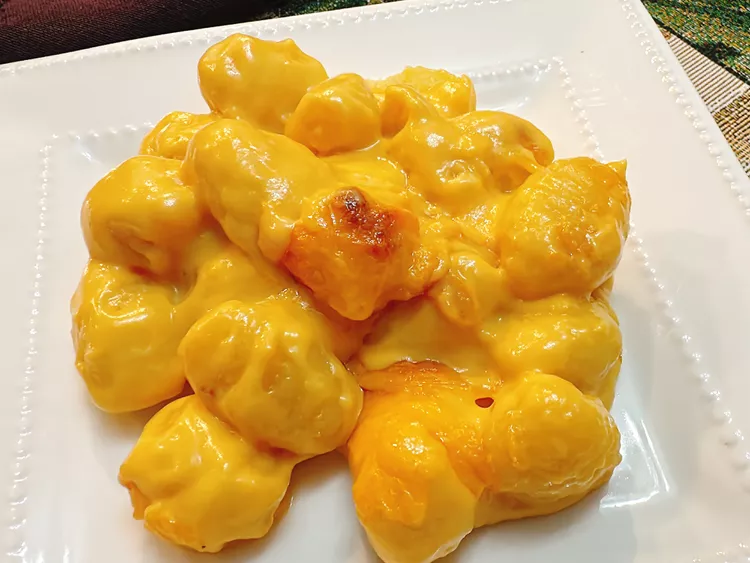

Gnocchi Mac and Cheese

Description
For this gnocchi mac and cheese, I combine two favorites, baking pillowy gnocchi in a rich Cheddar cheese sauce. You won't miss the macaroni at all.
Ingredients
- 2 tablespoons butter
- 2 tablespoons all-purpose flour
- 1/4 cup heavy cream
- 1 cup evaporated milk or half-and-half, or more as needed
- 1/2 teaspoon Worcestershire sauce
- 1/2 teaspoon prepared mustard
- 1 cup shredded sharp extra-sharp Cheddar cheese
- 2 tablespoons Cheddar cheese powder
- 12 ounces refrigerated prepared gnocchi
Steps
- Preheat oven to 375 degrees F (190 degrees C).
- Melt butter in a saucepan over medium high-heat. Whisk in flour until smooth, and cook about 1 minute.
- Whisk in cream, evaporated milk, Worcestershire, and mustard. Stir in Cheddar cheese and cheese powder and cook until cheese melts, about 2 minutes. If you prefer a thinner sauce, add evaporated milk, 1 tablespoon at a time, until sauce is the consistency you like.
- Stir in gnocchi; pour mixture into a small baking dish.
- Bake in the preheated oven until bubbly, about 20 minutes. Serve immediately.